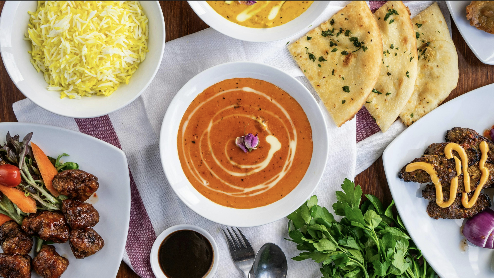

Chef's Special
Our chef's carefully crafted signature dish that brings together tradition and innovation.

Chef's
Choice
Butter Chicken
A rich and creamy curry that combines tender chicken with a luxurious tomato-based sauce. This dish represents the perfect balance of spices and comfort.
Ingredients
- 500g boneless chicken
- 2 tbsp butter
- 1 tsp ginger-garlic paste
- 1 tsp turmeric, chili powder, salt
- 2 tbsp cream or malai
- 1 chopped onion
- 1 chopped tomato
- 1 tsp kasuri methi (dried fenugreek)
Instructions
- Marinate chicken with yogurt, ginger-garlic paste, salt, turmeric & chili for 30 mins.
- In a pan, heat butter. Cook marinated chicken until done. Set aside.
- In the same pan, sauté onions and tomatoes until soft. Blend to make smooth gravy.
- Return gravy to pan, add cream, kasuri methi, and cooked chicken. Simmer for 5-7 mins.
- Serve hot with naan, roti, or rice.
Chef's Notes
For the best results, marinate the chicken overnight. The longer marination allows the spices to penetrate deeper, resulting in more flavorful meat. Also, using fresh cream instead of heavy cream gives a lighter yet rich texture to the gravy.